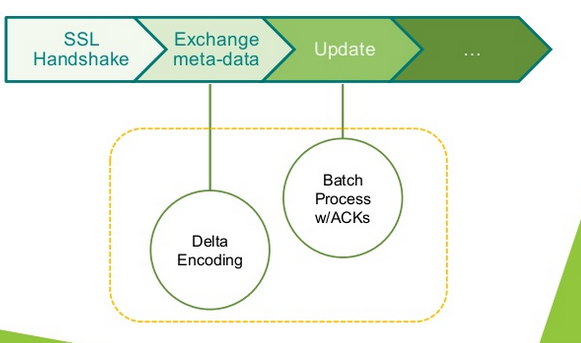
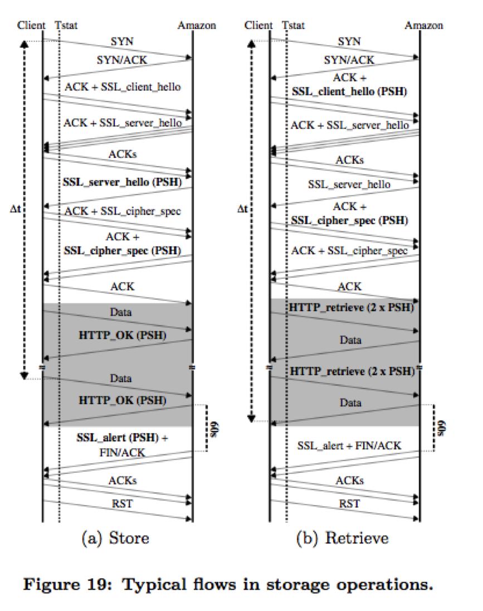
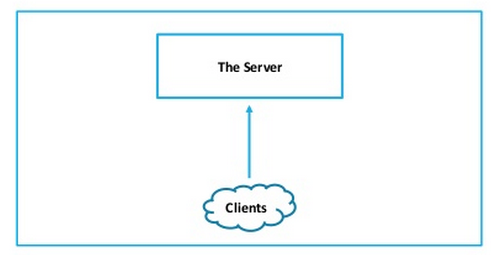
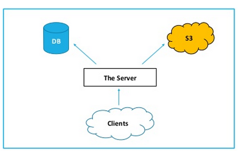
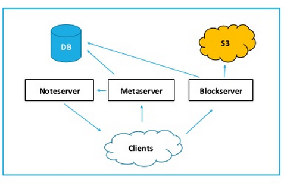
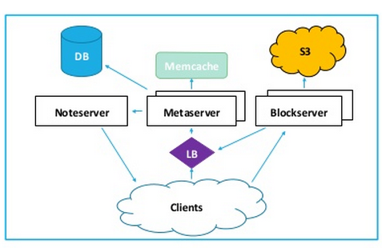
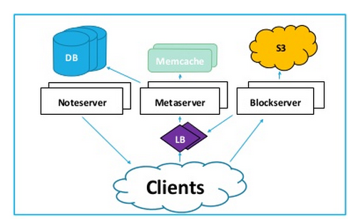
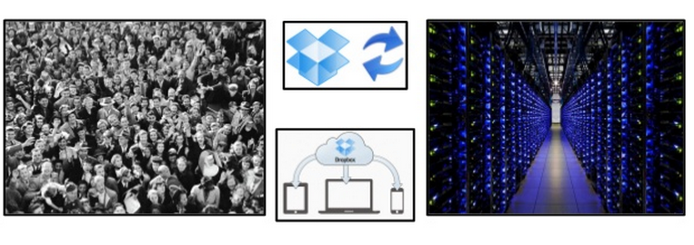

Intro
Dropbox is a cloud storage service using proprietary protocols and making the share and exchange of files and folders more convenient and efficiently.
Servers
Dropbox depends on Amazon EC2 and S3 to store files, including direct links, client storage, back-traces, web storage and API storage. It uses Go as its backend infrastructure and also relies on the librsync binary-delta library. For desktop client, it utilizes python GUI toolkits such as wxWidgetsand Cocoa. Dropbox’s full browser-side codebase is written in CoffeScript. [1]
Network Flow
This graphic shows teh network flow of Dropbox. [2] A study conducted by Idilio Drago and his colleague[5] revealed the interactions bewteen a dropbox client and the offical servers using SSLBump running on squid.
A Brief History[3]
Dropbox started with 2 employees with 0 user in mid 2007.
In late 2007, Dropbox increased its employees to 3 and started using S3 and MySQL.
In early 2008, Dropbox split its server into 3 servers: noteserver, metaserver (storing meta data) and blockserver (hosting files). At that time it had about 50k users.
In late 2008, Dropbox added more meta and block servers to server for the increasing amount of users (100k at that time). It also added Memecache to the database to avoid database scaling issues. Load balancing method was added to improve the system performance.
In early 2012, users increased to 50M. Dropbox added more DBs and the use of load balancing became more ubiquitous.
In 2014, Dropbox developed its users to 200M. There were 1 billion of files sync a day.
Security
Dropbox uses SSL protocol and AES-256 to encrypt data. More specifically, the latter is used for web connections and connections with desktop applications. Diffie-Hellman key exchange24, authenticated with RSA, is used as a password negotiation algorithm. But according a research by Jesús Díaz Vico, the data is not secured in every mobile device. “Not every mobile client is compatible with the transmission of ciphered data, so there could be instances in which certain information is not encrypted before it is sent.”[4]. Moreover, Dropbox receives passwords from users through TLS without processing a hash function or similar, which could result in the leak of users’ information by attackers. The server also has access to the passwords.
Other Tools:
Information from Wikipedia[1]:- "Dropbox developed a technology called LAN sync, which allows computers on a local area network to securely download files locally from each other instead of always hitting the central servers."
- "An open source tool called Dropship provided unauthenticated access to Dropbox-hosted files by using the DropboxAPI to access files by their hash."
References
[1] Dropbox (service), Wikipedia
[3]Dropbox - Architecture and Business Prospective
[4]Security in cloud storage services, analysis of dropbox and Mega
[5] Understanding the dropbox protocol and quantifying the usage of cloud storage services